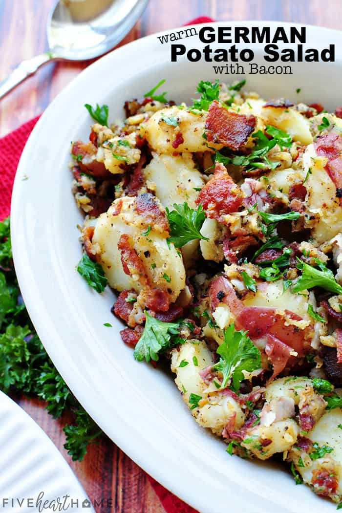

German Potato Salad

THE BEST German Potato Salad is a hot potato salad recipe featuring tender red potatoes and bacon in a tangy dressing for the ultimate side dish, from summer grilling to Oktoberfest!
1.5-2 lbsred potatoes12-16 ozbacon1onion, diced3garlic cloves, minced⅓ cupapple cider vinegar or white vinegar2 tbspwater1 tbspDijon mustard1½ tbspsugar, or to taste1 tspsalt, or to taste¼ tspground black pepper, or to taste½ cupchopped fresh parsley
Scrub the potatoes and cut any large potatoes in half so that all of the potatoes are approximately equally sized. Place the potatoes in a large pot and cover with cold water. Bring to a boil and stir in 1 teaspoon of salt. Reduce heat and simmer the potatoes for 15 to 20 minutes or until tender when stabbed with a fork. Drain the water. Leaving the potatoes in the pot, return the pot to the still-hot (but turned off) burner. Leave the lid off of the pot and allow the potatoes to steam dry for a couple minutes.
Set a large pan over medium heat and cook the bacon, stirring occasionally, until crispy (about 8 minutes). Once the bacon is done, transfer bacon to a paper towel-lined plate and crumble when cool enough to handle. Leave bacon grease in the skillet.
Cook onion in the bacon grease over medium heat until browned, 6 to 8 minutes. Slowly and carefully add vinegar, sugar, Dijon, salt, and pepper to the pot of bacon grease. Bring the mixture to a simmer, and stir for a couple of minutes. Stir in the minced garlic into the mixture and cook for 30 seconds to 1 minute, until the garlic starts to turn a light golden.
Remove the pot from the heat and toss in the sliced potatoes, gently mixing until potatoes have absorbed all of the liquid. Carefully fold in the cooked bacon pieces and chopped parsley.
Transfer the potato salad to a serving dish and serve hot or warm. Potato salad should not sit at room temperature for more than two hours before refrigerating any leftovers.